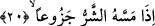
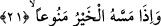

“Gerçekten insan” yâni insan cinsi “çok hırslı ve sabırsız yaratılmıştır.” “Helû”
kelimesi hele’ kökünden gelen “hâli’” kelimesinin mübâlağalı hâlidir. Bu kök, insanın
başına istemediği bir şey geldiğinde kendisini tutamayacağı bir biçimde sabırsızlık ve
sızlanma ile harekete geçmeyi ve eline bir iyilik geçtiğinde aynı hızla içine kapanarak
bundan hiç kimseye vermemeyi ifâde eder. Çok hızlı yürüyen deveye “helvâ’” denir.
Dördüncü bâbdandır. İbn Abbas’ın ifâdesine göre üzerinde durduğumuz bu kelimeyi
yine en güzel biçimde Cenâb-ı Hak şimdi gelecek âyette tefsir etmiştir.
20. Kendisine fenâlık dokunduğunda sızlanır, feryâd eder.
Yâni insanoğlu kendisine bir kötülük dokunduğunda, fakir düştüğünde veya
hastalandığında ya da buna benzer başka bir sıkıntıya girdiğinde hemen sızlanır, feryâd
eder. Sızlanma ve feryâd etme anlamını ifâde eden kelime, “cezûan”dır. Bu kelime
“cez’” kökünden türemedir. Mânâsı, “insanoğlu böylesi bir sıkıntıya düştüğünde, kaderi
bilmediği için feryâdı basar” şeklindedir. Bu kök, sabır kökünün tam zıttıdır.
İbn Ata der ki: Helû’ diye nitelenen kişi, elinde varken bundan râzı olan, elinde
olmadığında öfkelenen kimsedir. Bir hadis-i şerifte şöyle buyurulur: “İnsanda bulunan
(huy)ların en kötüsü, hırslı bir cimrilik ve şiddetli bir korkaklıktır.” [101] Yâni keder
ve üzüntü veren bir cimrilik ve kalbi çıkaracak gibi olan korkaklık.
Âriflerden birisi şöyle diyor: Nefislerin, hastalığı hoş görmeyişlerinin sebebi, bunun
kendilerini Allah Teâlâ’ya hakları olan mükellefiyetleri edâdan alıkoymasıdır. Çünkü
hayvânî ruh, bir elem hissettiğinde, mükellefiyetleri edâ eden cesedi idâre edemez.
Âriflerin nefislerinin, ölümü çirkin görmeyişinin sebebi ise ölümde Allah’a kavuşmanın
bulunmasıdır. Şu hâlde ölüm, âriflerin gözünde bir nimet ve bir ihsandır. Bu sebeple
Peygamber Efendimiz (s.a.), ölümü seçip seçmeme husûsunda muhayyer bırakılınca
ölümü tercih etmiştir.[102]
21. Ona imkân verildiğinde ise pinti kesilir.
“Ona imkân” yâni zenginlik ve başka şeyler “verildiğinde ise pinti kesilir.” Yâni
başkalarına vermemekte, malını elinde tutmakta aşırı davranır. Çünkü o kısmeti
(Allah’ın kullarına taksîmâtını) ve vermenin fazîletini bilmemektedir. Cimriliğin
artmasında, insanın sağlık içinde olmasının bir katkı ve payı vardır. Çünkü zengin,